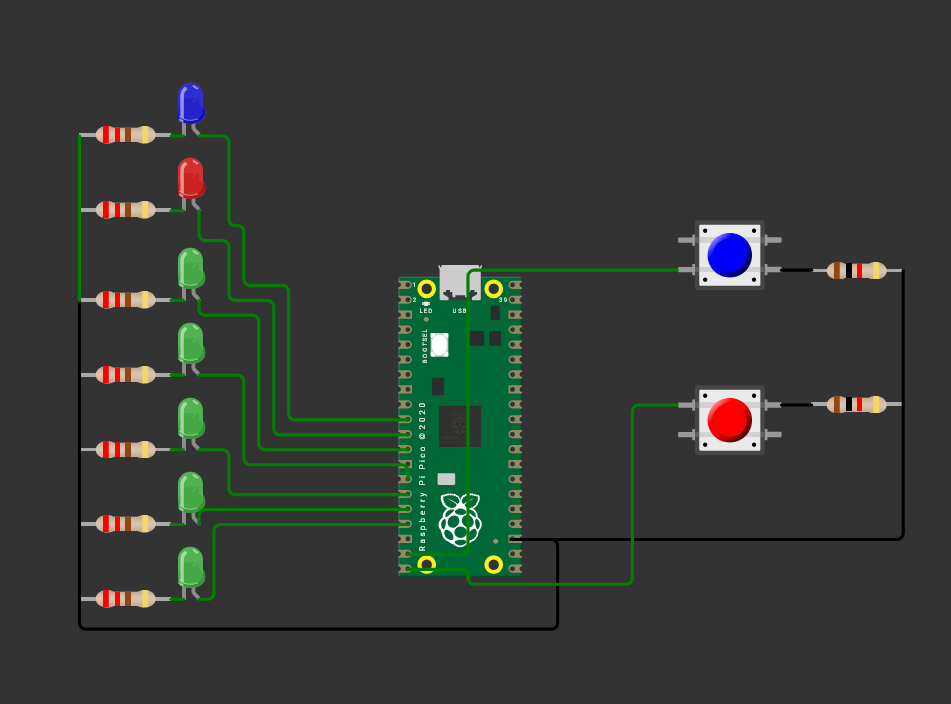

Pong
1) Resumen
Nombre del proyecto: Pong de LEDs con interrupciones
Equipo / Autor(es): Rodrigo Zarate Fernandez
Curso / Asignatura: Sistemas Embebidos
Fecha: 01/09/2025
Descripción breve: Juego de “Pong” unidimensional usando 5 LEDs para la pelota, 2 salidas para puntos y 2 botones con interrupciones para devolver la pelota en los extremos. Información del proyecto:
Lenguaje/SDK: C con Raspberry Pi Pico SDK (pico/stdlib.h). Técnicas clave: manejo de GPIO, interrupciones por flanco de bajada, pull-ups internos, lógica de estados. Plataforma: Raspberry Pi Pico / Pico 2.
Material utilizado:
Raspberry Pi Pico (o Pico 2) + cable micro-USB/USB-C
Protoboard
7 LEDs (5 para “cancha”, 2 para puntos J1/J2)
7 resistencias 220–330 Ω (una por LED)
2 botones momentáneos
2 resistencias 1K-2K Ω para los botones
Cables de conexión (jumpers)
PC con VS Code + Pico SDK configurado
2) Objetivos
Usar interrupciones GPIO para leer botones con pull-up interno (activo en bajo). Modelar la lógica de juego con variables de posición (pos) y dirección (dir). Indicar estado del juego en hardware: 5 LEDs para pelota, 2 salidas para “punto”. Practicar estructura de programa embebido (inicialización–ISR–bucle principal).
3) Conexiones / Esquema
Botones (activos en bajo): - Un terminal del botón a GND; el otro a GPIO 14 (BTN_AVANZA) y GPIO 15 (BTN_RETRO). Se habilita gpio_pull_up(), por lo que al presionar el botón, la línea cae a 0 (flanco de bajada).
LEDs “cancha” (con resistencia a GND):
-
LED4 → GPIO 9
-
LED0 → GPIO 10
-
LED1 → GPIO 11
-
LED2 → GPIO 12
-
LED3 → GPIO 13
LEDs de “punto” (o zumbadores, según el montaje):
-
J1 → GPIO 7 (punto del jugador izquierdo)
-
J2 → GPIO 8 (punto del jugador derecho)
Recomendación: conectar ánodo del LED a GPIO mediante resistencia serie y cátodo a GND. Con gpio_put(pin, 1) el LED enciende.
Tabla rápida de pines
| Señal | GPIO | Uso |
|---|---|---|
| BTN_AVANZA | 14 | Botón jugador izquierdo |
| BTN_RETRO | 15 | Botón jugador derecho |
| LED4 | 9 | Posición 1(extremo izq) |
| LED0 | 10 | Posición 2 |
| LED1 | 11 | Posición 3 (centro) |
| LED2 | 12 | Posición 4 |
| LED3 | 13 | Posición 5(extremo der) |
| J1 | 7 | Indicador de punto izq |
| J2 | 8 | Indicador de punto der |
Esquematico

4) Código
#include "pico/stdlib.h"
#include <stdbool.h>
#define BTN_AVANZA 14
#define BTN_RETRO 15
#define LED4 9
#define LED0 10
#define LED1 11
#define LED2 12
#define LED3 13
#define J1 7
#define J2 8
bool Ju1 = false; // estado botón jugador 1
bool Ju2 = false; // estado botón jugador 2
int pos = 1; // posición inicial de la pelota
int dir = 1; // dirección inicial: 1=derecha, -1=izquierda
static void accion(uint gpio, uint32_t events) {
// FIX: habilitaste FALL en main; aquí también revisa FALL y atiende ambos botones
if (events & GPIO_IRQ_EDGE_FALL) {
if (gpio == BTN_AVANZA) { if (pos == 1 /*&& Ju1*/) dir = 1; } // Ju1 opcional
if (gpio == BTN_RETRO) { if (pos == 5 /*&& Ju2*/) dir = -1; } // Ju2 opcional
}
gpio_acknowledge_irq(gpio, events);
}
int main() {
stdio_init_all();
const uint LEDS[5] = { LED4, LED0, LED1, LED2, LED3 }; // 9,10,11,12,13
for (int i = 0; i < 5; i++) { // FIX: antes era < 4
gpio_init(LEDS[i] );
gpio_set_dir(LEDS[i], true);
gpio_put(LEDS[i], 0); // FIX: apaga inicialmente
}
const uint PUNTOS[2] = { J1, J2 };
for (int i = 0; i < 2; i++) {
gpio_init(PUNTOS[i] ); // FIX: inicializa PUNTOS, no LEDS
gpio_set_dir(PUNTOS[i], true); // FIX: salida
gpio_put(PUNTOS[i], 0); // FIX: apaga inicialmente
}
// Botones como entrada con pull-up (activo en bajo)
gpio_init(BTN_AVANZA); gpio_set_dir(BTN_AVANZA, false); gpio_pull_up(BTN_AVANZA);
gpio_init(BTN_RETRO); gpio_set_dir(BTN_RETRO, false); gpio_pull_up(BTN_RETRO);
// IRQ: instalas callback con el primero y habilitas también el segundo
gpio_set_irq_enabled_with_callback(BTN_AVANZA, GPIO_IRQ_EDGE_FALL, true, &accion);
gpio_set_irq_enabled(BTN_RETRO, GPIO_IRQ_EDGE_FALL, true);
while (true) {
// (Opcional) actualizar flags de botones si los quieres usar en otro lado
Ju1 = !gpio_get(BTN_AVANZA);
Ju2 = !gpio_get(BTN_RETRO);
// --- Movimiento automático ---
pos += dir;
// Rebotes en bordes si nadie responde
if (pos == 6) {
for (int i = 0; i < 5; i++) gpio_put(LEDS[i], 1);
gpio_put(J2, 1);
sleep_ms(2000);
gpio_put(J2, 0);
pos = 3;
// (tu lógica original no reubica pos ni dir aquí más allá del if)
}
if (pos == 0) {
for (int i = 0; i < 5; i++) gpio_put(LEDS[i], 1);
gpio_put(J1, 1);
sleep_ms(2000);
gpio_put(J1, 0);
pos = 3;
}
// --- Mostrar LEDs ---
for (int i = 0; i < 5; i++) {
gpio_put(LEDS[i], (i + 1 == pos)); // LEDS[0] ↔ pos=1 ... LEDS[4] ↔ pos=5
}
sleep_ms(250);
}
}
5) Explicación del programa
a) Definiciones y mapeo de pines Botones: BTN_AVANZA=14, BTN_RETRO=15 (entradas con pull-up, activos en bajo). LEDs “cancha”: LED4=9, LED0=10, LED1=11, LED2=12, LED3=13. Se agrupan en LEDS[5] = { LED4, LED0, LED1, LED2, LED3 }, donde pos=1 corresponde a LEDS[0] (GPIO 9) y pos=5 a LEDS[4] (GPIO 13). Indicadores de punto: J1=7 (izquierda), J2=8 (derecha). Se configuran como salidas y se encienden 2 s al anotar.
b) Variables de estado pos ∈ {1,2,3,4,5} indica la posición de la pelota. dir ∈ {+1, −1} define la dirección (derecha/izquierda). Ju1, Ju2 sirven como flags de lectura (opcionales, el juego funciona sin usarlas).
c) Interrupción accion() Se activa con flanco de bajada (GPIO_IRQ_EDGE_FALL) en cualquiera de los dos botones. Lógica de “devolución”: Si la pelota está en el extremo izquierdo (pos==1) y cae el botón izquierdo (BTN_AVANZA), se fuerza dir = +1. Si está en el extremo derecho (pos==5) y cae el botón derecho (BTN_RETRO), se fuerza dir = −1. Se llama a gpio_acknowledge_irq() para limpiar el evento atendido.
d) Inicialización en main() LEDS y PUNTOS se inicializan como salidas y se apagan. Botones se configuran como entradas con gpio_pull_up(). Se registra la ISR con gpio_set_irq_enabled_with_callback() en BTN_AVANZA y se habilita también la IRQ de BTN_RETRO.
e) Bucle principal (Opcional) Actualiza Ju1/Ju2 leyendo el estado instantáneo de los botones. Movimiento: pos += dir; Punto/anotación si la pelota “sale”: Derecha: si pos==6, se encienden todos los LEDs de cancha, se activa J2 por 2 s y se reinicia pos=3. Izquierda: si pos==0, se encienden todos los LEDs de cancha, se activa J1 por 2 s y se reinicia pos=3. (La dirección dir no se reorienta explícitamente tras el punto.) Render: se enciende únicamente el LED cuyo índice+1 == pos. Velocidad: sleep_ms(250) define la dificultad.
6) Pruebas y comportamiento esperado
Arranque: un único LED encendido en la posición 1; la “pelota” avanza hacia la derecha (dir=+1). Devolución correcta: al llegar al LED extremo, si el jugador correspondiente presiona a tiempo, la pelota cambia de sentido sin salir. Fallo: si nadie presiona y la pelota intenta pasar de 5→6 o 1→0, se marca punto (J2 o J1, respectivamente) y se reinicia en el centro (pos=3).